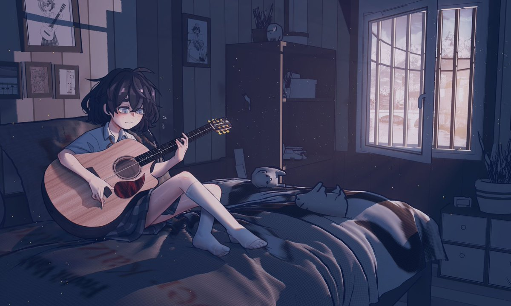

@Ambient_Isotopy 抱抱，我也没考上本科。😭
但情况不同的是我的学校主动让我们去考四六级，但就我现在和初中生差不多的英语水平来说真能在大一把四级给考下来吗？四级没过的到时学校强制安排实习好像就没什么时间自己备考专升本了。
提到专升本高数又是一个绕不开的话题，然而我高中学得最差的科目就是数学和英语 ()。

但情况不同的是我的学校主动让我们去考四六级，但就我现在和初中生差不多的英语水平来说真能在大一把四级给考下来吗？四级没过的到时学校强制安排实习好像就没什么时间自己备考专升本了。
提到专升本高数又是一个绕不开的话题，然而我高中学得最差的科目就是数学和英语 ()。

没能考上本科，始终是我难以解开的心结
每次在社交媒体上刷到别人分享的大学生活：专业课、实验室、高数、四六级、论文、校招、实习……
我总觉得和他人相比自己的人生缺少了些什么，而这些经历、这些词汇大概永远不会成为我生活的一部分 https://t.co/AK06vvWbJl
每次在社交媒体上刷到别人分享的大学生活：专业课、实验室、高数、四六级、论文、校招、实习……
我总觉得和他人相比自己的人生缺少了些什么，而这些经历、这些词汇大概永远不会成为我生活的一部分 https://t.co/AK06vvWbJl